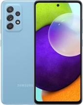
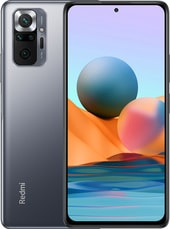

Нам предстоит разговор о будущем. Но рассуждать о будущих розах – не есть ли это занятие по меньшей мере неуместное для человека, затерянного в готовой вспыхнуть пожаром чаще современности? А исследовать шипы еще не существующих роз, выискивать заботы праправнуков, когда мы не в силах управиться с изобилием сегодняшних, – не покажется ли все это попросту смешной схоластикой? Имеем ли мы хотя бы оправдание, будто ищешь нечто вселяющее оптимизм или движим любовью к истине, которая-де особенно отчетливо видна именно в грядущем, не ведающем бурь (даже в их буквальном смысле, если удастся покорить климат)!
Но оправданием здесь не может служить ни академическая страсть, ни невозмутимый оптимизм, обязывающий верить, что, как бы ни пошли дела, все кончится благополучно. Мое оправдание одновременно и проще, и гораздо прозаичнее, и, пожалуй, скромнее: берясь писать о завтрашнем дне, я просто делаю то, что умею, и не важно даже, как это у меня получается, поскольку это мое умение – единственное. А коль скоро так, то моя работа будет излишней не больше и не меньше, чем любая другая; ведь всякая работа стои т на том, что мир существует и будет существовать и дальше.
Удостоверясь, что замысел наш не является из ряда вон выходящим, поставим вопрос о границах темы и о методе. Нам предстоит разговор о различных мыслимых аспектах цивилизации, аспектах, которые можно вывести из предпосылок, известных уже сегодня, как бы ни мала была вероятность их осуществления. В свою очередь фундаментом наших гипотетических построений будут технологии, то есть обусловленные состоянием знаний и общественной эффективностью способы достижения целей, поставленных обществом, в том числе и таких, которые никто, приступая к делу, не имел в виду[4].
Механизм действия различных технологий, как существующих, так и возможных, меня не интересует, и о нем можно было бы не говорить, если бы созидательная деятельность человека, подобно деятельности Господа, была свободна от засорений; иначе говоря, если бы мы (сейчас или когда-либо) научились реализовывать свой замысел в чистом виде, достигнув методической точности Творения, если бы, сказав «Да будет свет!», получали в виде конечного продукта светозарность без всяких нежелательных примесей. Типичным, однако, является не только упомянутое «раздвоение» целей, но и подмена намеченных целей иными (и очень часто нежелательными!). Злопыхатели усматривают аналогичные недостатки даже и в твореньях Господних, особенно после пуска головного экземпляра разумного существа и передачи этой модели Homo sapiens в серийное производство. Но оставим эти вопросы «теотехнологам». С нас достаточно и того, что человек, что бы он ни делал, почти никогда не знает, что именно он делает, во всяком случае, не знает до конца. Переходя сразу же к крайностям, заметим, что уничтожение жизни на Земле, столь возможное сегодня, не было целью никого из открывателей атомной энергии[5].
(Станислав Лем "Сумма технологии" ©)
(мерцающий бирюзовый)
(международная версия (зеленый))
(8GB/128GB (синий))
(черный)
международная версия (серый оникс)
